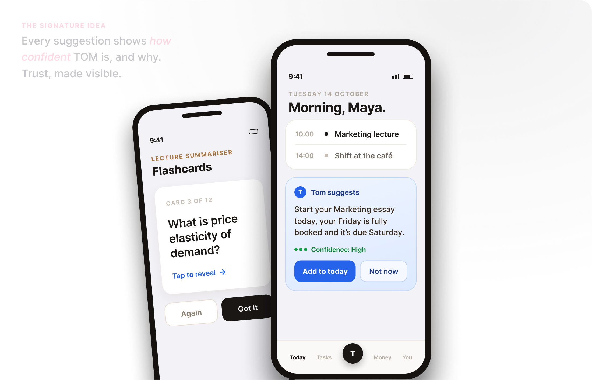
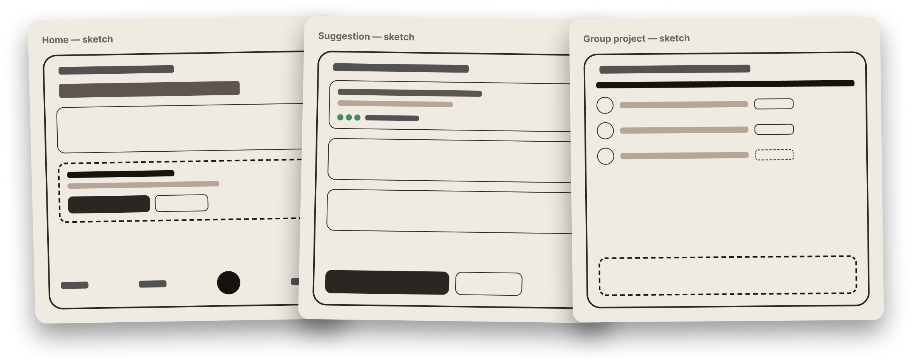
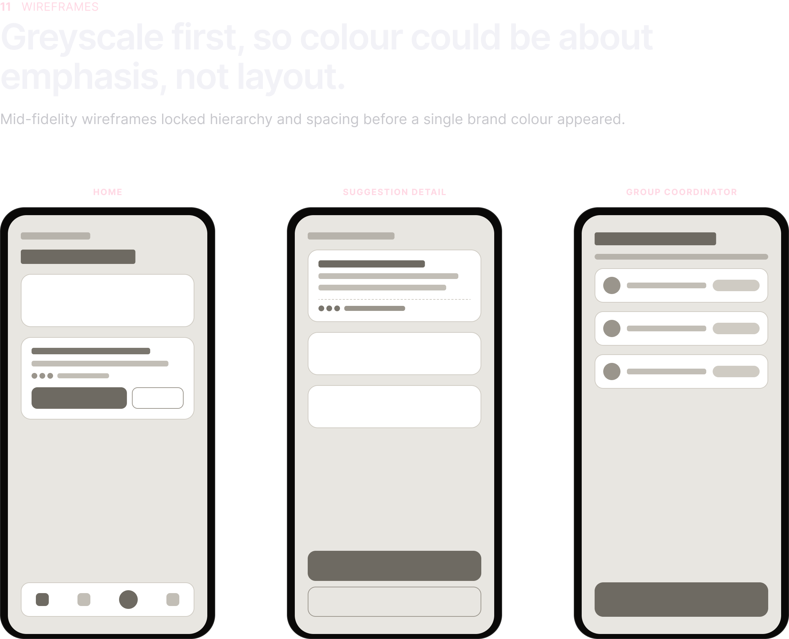
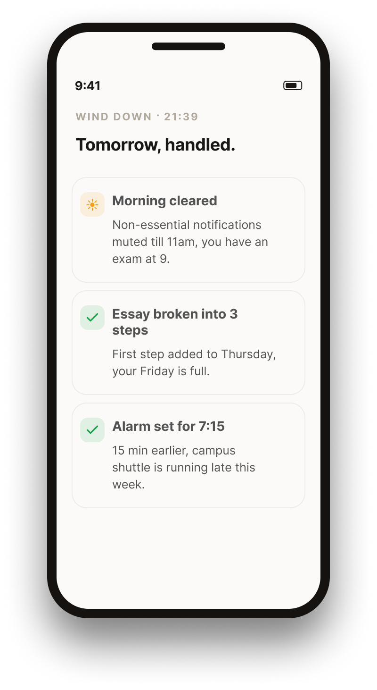

Aria · AI Student Assistant
Designing an AI that actually gets student life.
Aria is an AI personal assistant that helps university students manage academic, social, and
life admin, without the overwhelm.
My role
Solo Product Designer
Institution
Confidential client a leading U.S. university
Focus
AI Transparency & Trust
The signature idea: every suggestion shows how confident Aria is, and why. Trust, made visible.

Add hero image → assets/tom-hero.png
01The Problem
Students don't have a focus problem. They have a coordination problem.
University life in 2024 means managing a lecture schedule, three group projects, a part-time job, a social life, and rent, all at once. Students aren't lazy or disorganised. They're operating at the edge of their cognitive capacity with tools that weren't built for them.
Google Calendar tells you when something is due. Notion helps you write things down. ChatGPT helps you draft an email. But nothing connects the dots. Nothing watches your back.
Deadlines sneak up. Budgets spiral. Group projects fall apart. And by Week 8, burnout sets in quietly, not with a bang, but with a student staring at a blank document at 2am wondering where the time went.
The real problem isn't that students need another productivity app. It's that they need something that thinks ahead for them, so they don't have to think about everything all at once. That's the gap Aria was designed to fill.
How might we
Design an AI personal assistant that proactively coordinates a student's academic, financial, and social responsibilities, reducing cognitive overload and building trust through transparency.

Add Before Aria section → assets/tom-before.png
02Understanding the User
I wasn't looking for features. I was looking for friction.
With the list of interview questions I prepared, the stakeholder spoke with five university students across different concentrations, looking for the specific points in their week where things fell apart. Three themes came up consistently.
01
The coordination gap
Information was scattered everywhere, deadlines in one app, notes in another, emails in their inbox. The mental load of connecting it all was exhausting.
02
Deadline anxiety peaks early
Students panicked two or three days before, not on the day. The problem wasn't the deadline. It was the lack of a warning system with enough runway.
03
AI distrust is real
Every student had a story of an AI tool confidently giving wrong information. They'd learned to double-check everything, which defeated the purpose.
These three insights shaped every major design decision that followed.
03Interviews · Method
Five students. Thirty minutes each. One question under every question.
Semi-structured conversations across years and concentrations, walking each student through a real week. We weren't testing a solution, we were hunting for the exact moments a week falls apart.
“
I don't forget that things are due. I forget to start them early enough to do them well.
“
Every app holds one piece of my life. I'm the integration layer, and I'm exhausted.
“
I've been burned by AI being confidently wrong, so now I double check everything, which is more work.
04Affinity Mapping
Sixty scattered notes wanted to fall into three piles.
I pulled every observation onto sticky notes and clustered them. The same three tensions surfaced again and again, and they became the backbone of the whole product.

Add affinity map → assets/tom-affinity.png
05Defining the User
Maya doesn't need more features. She needs fewer decisions.
M
Maya
20 · she/her
Course
2nd-year Economics concentrator
Life right now
Lectures 4 days/week, weekend dining-hall shifts, one group project already behind.
Tools she half-uses
Calendar, Notion, 17 unread emails
“I'm capable, I'm just always one step behind.”
Frustrations
- −Forgets deadlines until it's too late to do her best work
- −Overspends without realising where it went
- −Group projects collapse on coordination
Goals
- +Stay on top of academics without constant stress
- +More time for social life and rest
- +Feel genuinely in control of her schedule
06User Journey Map
Maya's week has a cliff. It's Thursday night.
I mapped a typical assignment week against her emotional state. The low point isn't the deadline itself, it's the night before, when there's no runway left. That's where Aria has to intervene.
Stage
Emotion
🙂 Optimistic
😑 Distracted
😯 Anxious
😭 Overwhelmed
😌 Drained but done
Thinking
“Loads of time this week.”
“I'll start it soon.”
“Wait, that's due Saturday?”
“Why didn't I start earlier?”
“Never again. (Until next time.)”
Aria's move
Spot the deadline early; reserve calm time.
Drop a low-pressure first step into the day.
Step in HERE: “start today, here's why.”
Protect the morning; break work into chunks.
Reflect: lighten next week's load.
07Card Sorting
Stakeholder handed students 18 cards. They built the menu for them.
An open card sort of every possible feature. Four groupings emerged almost unanimously, and they mapped one-to-one onto the navigation, so the structure came from users, not from me.
Today / Now
named by 5 / 5
- Schedule & agenda
- Aria suggestions
- Quick add
My Work
named by 5 / 5
- Deadline tracker
- Lecture summaries
- Group projects
Money
named by 4 / 5
- Budget tracker
- Spending alerts
Me & Wellbeing
named by 4 / 5
- Burnout / load
- Trust & settings
08Information Architecture
Four destinations. Nothing more than two taps deep.
The card sort translated directly into a deliberately flat tree. A shallow architecture is a kindness to an overloaded brain, every core action is reachable without hunting.
Aria · Home
Today
- Agenda
- Suggestions
- Quick add
Tasks
- Deadlines
- Summaries
- Group projects
You
- Wellbeing
- Trust & AI
- Settings
09Task Flow
The flow that defines Aria: a suggestion, with a way out.
The core proactive loop, from detection to the user's choice. A confidence check sits in the middle, and every path ends with the user in control, accept, dismiss, or correct.
Aria detects an upcoming deadline
→
Checks calendar density & history
→
Confident enough?
→
Yes · High/Med: surface with reason + confidence
No · Low: ask a clarifying question first
→
User chooses: Add, Not now, or Correct → plan updates
10Low-Fidelity Sketches
Before pixels, paper. Fast and disposable.
I sketched the core screens to test layouts in minutes. Three weak ideas died on paper in an afternoon, far cheaper than discovering them in Figma a week later.

Add sketches → assets/tom-sketches.png

Add wireframes section → assets/tom-wireframes.png
12Design System
A small system that keeps Aria calm and consistent.
One typeface, a restrained palette, and a handful of components. The confidence chip is the one component doing the most trust work, so it earned its own fixed, unmistakable language.

Add design system → assets/tom-design-system.png
13The Decisions That Mattered
A lot of decisions went into Aria. Four shaped it most.
1
Proactive over reactive
Most assistants wait to be asked. Aria needed to speak first.
Instead of waiting for Maya to check her schedule, Aria surfaces what matters before she thinks to look. Three days before an assignment is due, it breaks the work into daily tasks. The night before an exam, it quietly clears her morning.
A small interaction shift that changed the entire personality of the product, from a tool into something closer to a thoughtful collaborator.

Add proactive screen → assets/tom-proactive.png
![2 · The AI Confidence Indicator. The decision I'm most proud of, and it came straight from research. Students didn't trust AI because they couldn't tell how reliable a suggestion was. So every AI-generated suggestion carries a confidence level, high, medium, or low, and a one-line reason: 'I'm suggesting you start today because your Friday is fully booked and the deadline is Saturday. Confidence: High.' Trust went up. Dismissals went down. And when Aria was wrong, users understood why, rather than losing faith in the product entirely. The phone shows a Aria suggestions screen, 'Why you're seeing this', with Start your essay today at Confidence High, Skip the gym today at Confidence Medium, and Text Sam about the slides at Confidence Low.](assets/tom-confidence.png)
Add confidence section → assets/tom-confidence.png
![3 · Designing for when AI fails. Most AI designs only handle the happy path. Students don't live there. Designing for failure isn't pessimistic, it's what separates a trustworthy product from a fragile one. I designed three distinct failure states. 01 · Confident but wrong: Aria says 'I moved your shift to Sunday' with a High confidence chip; the student replies 'Actually, it's Saturday' and Aria corrects itself with an Undo my changes option, a one-tap correction with a brief explanation so Aria learns the preference. 02 · Uncertain: Aria asks 'Before I add this, which project did you mean?' with 'I'd rather ask than guess', offering Marketing group project or Business Ethics essay, flagging missing information rather than guessing. 03 · Out of scope: to 'Can you write my essay for me?' Aria replies 'That's not something I'll do, it's your work to own' and offers to build an outline instead, stating clearly what it won't do and offering a useful alternative.](assets/tom-failure-states.png)
Add failure states section → assets/tom-failure-states.png
![4 · Burnout as a design consideration. When Maya is overloaded, Aria creates space, it doesn't fill it. No assistant I reviewed treated wellbeing as a core principle, they optimised for productivity: more tasks, more reminders, more engagement. I took a different position. When her schedule crosses a threshold of density, Aria suggests what to defer rather than what to add. It nudges her to wind down. This made Aria feel less like a productivity tool and more like something genuinely on Maya's side. The phone shows a Wellbeing screen, 'Your week's load', with a bar chart peaking Thursday and Friday, and a 'Heads up' card: that's five back-to-back days, Friday looks heavy, want me to move your gym session to next week? with Defer it and Keep it options.](assets/tom-burnout.png)
Add burnout section → assets/tom-burnout.png
The Full System
Six features. One assistant.
◎
Smart Deadline Tracker
Breaks assignments into daily micro-tasks. Students freeze at big deadlines, smaller steps reduce anxiety.
☷
Lecture Summariser
Paste notes, get summaries and flashcards. Active recall beats passive re-reading.
♥
Burnout Detector
Flags overloaded days, suggests lighter alternatives. Wellbeing, not just productivity.
★
AI Confidence Indicator
Every suggestion shows a confidence level and reason. Transparency builds trust.
☷
Group Project Coordinator
Tracks tasks per member, sends nudges. The #1 pain point in interviews.
£
Student Budget Tracker
Logs spending, alerts near limits. Financial stress directly hits academic performance.
![Group Project Coordinator · Web. A Aria.app browser view of Marketing Strategy — Group 4, due in 4 days, 62% complete: Maya · Build the slides (In progress), Sam · Market research (Done), Priya · Write the intro (Not started), Jordan · Final edit & proof (Waiting). A 'Aria is coordinating' panel notes Priya hasn't started the intro and it blocks Jordan's edit, and offers to send a gentle nudge at Confidence Medium, with Send a friendly nudge or Not now. Aria tracks each member's tasks and only nudges when something is genuinely blocking the team.](assets/tom-coordinator.png)
Add coordinator mockup → assets/tom-coordinator.png
![Three more Aria screens. Budget Tracker: October, £312 of £500 left, Eating out £88, Groceries £64, with a Heads up: you're £12 from your eating-out limit, with 9 days left. Onboarding · Trust: 'Hey Maya! Here's the deal, upfront.' I can plan ahead, break down deadlines, and watch your week for you; I won't do your work for you, or act on anything without showing my reasoning, with a 'Got it, let's start' button. Lecture Summariser: Week 6 · Microeconomics Summary, elasticity measures how demand responds to price, necessities are inelastic and luxuries are elastic, revenue peaks where elasticity equals one, with 12 flashcards ready from your pasted notes.](assets/tom-features-trio.png)
Add feature trio → assets/tom-features-trio.png
14Prototype Walkthrough
See it move: one morning, start to finish.
A short, looping walkthrough of the core flow. The whole loop is the product in miniature: a proactive nudge, its reasoning, a confidence level, and a choice that always belongs to the student.
15Key Design Challenges
Three hard questions. Three deliberate answers.
Challenge
How do you make AI feel helpful, not intrusive?
Decision
A “not now” dismiss on every nudge, with no penalty. Saying no is always free.
Challenge
How do you handle when AI gets something wrong?
Decision
Clear error states with a one-tap correction flow, so a mistake builds the relationship instead of breaking it.
Challenge
How do you build trust with first-time users?
Decision
Onboarding that explains what Aria can and can't do upfront, before it ever makes a suggestion.
16What I'd Do Differently
01
Test the confidence indicator with more users before settling on the design. The concept resonated, but the visual treatment took several iterations I'd want structured feedback on.
02
Invest far more in onboarding. First-time users needed more context on what Aria could and couldn't do before they trusted it enough to engage.
What this project taught me
Designing for AI isn't primarily a visual challenge. It's a trust challenge.
The hardest problems weren't layout or colour or typography. They were: How do you help a user understand why an AI is making a suggestion? How do you design for the moments it gets things wrong? How do you build something that feels helpful rather than intrusive? These are the questions I'll carry into every AI product I work on next.